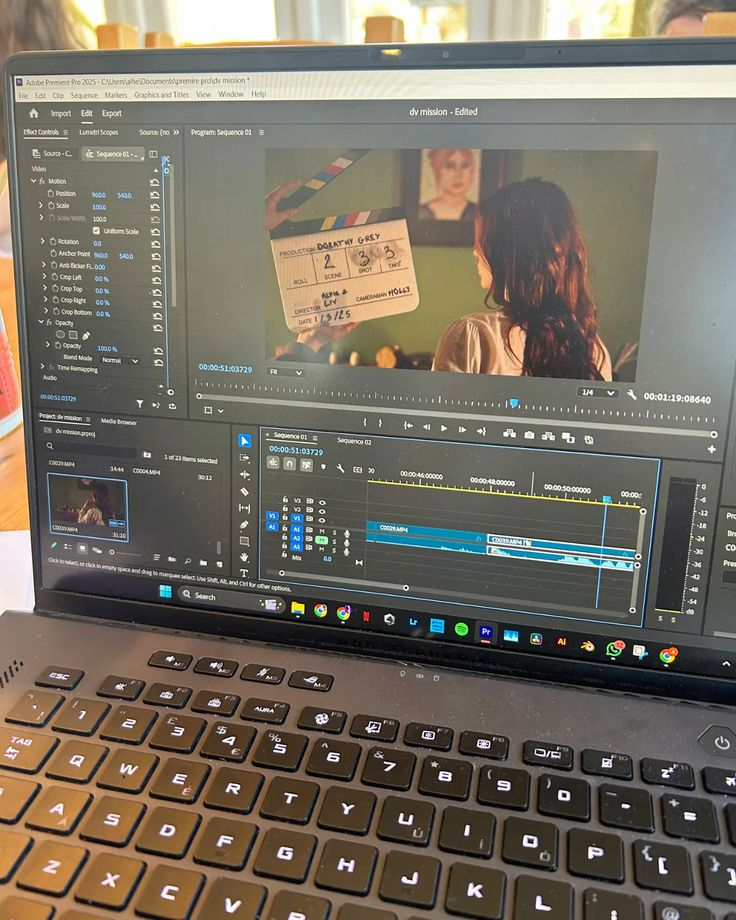
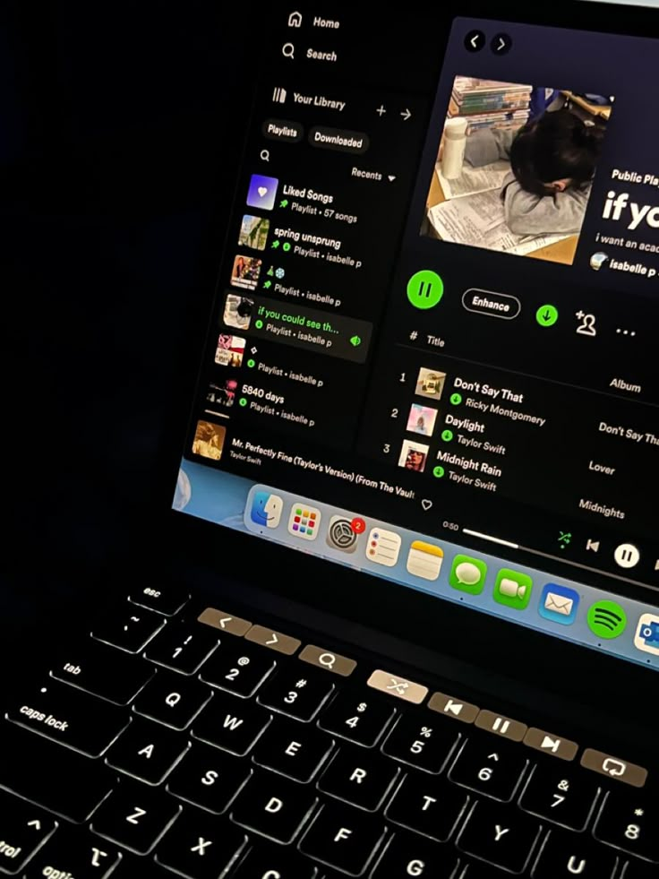
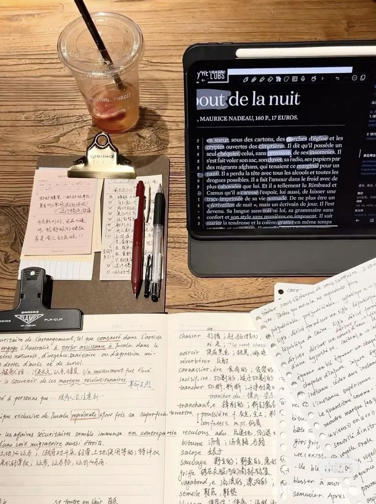

Hobbies
Exploring the activities that keep me inspired and motivated every day.

Video Editing
I enjoy the process of storytelling through video. Combining clips, transitions, and audio allows me to create engaging content that captures attention and conveys messages effectively.

Playing Music
Music is a huge part of my life. Whether I am listening or playing, it serves as a creative escape and a way to express emotions that words sometimes cannot reach.

Watching K-Drama
I find inspiration in the cinematography and storytelling of Korean dramas. They offer a unique window into different cultural perspectives and creative screenwriting.

Learning Languages
As someone fluent in Tagalog and English, I love expanding my linguistic skills. Learning new languages helps me connect with more people and understand diverse cultures.